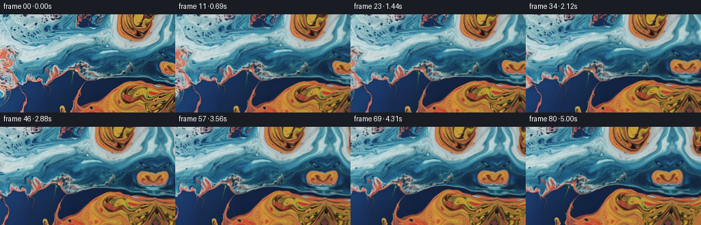
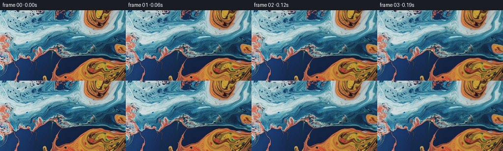

候选 01 · 2026-11-09T01:54:54.130313+00:00 · 点开播放与检查图
inspection.png

transition_check.png

代码变化
--- 上一保存版本
+++ 本次保存版本
@@ -0,0 +1,159 @@
+"""Generate a slow macro shot of blue/orange liquid with a rightward camera pan.
+
+The supplied still is treated as a photographed liquid texture. A continuous
+panorama is made by gently extrapolating its two edges; subsequent frames use
+sub-pixel camera motion plus a smooth, incompressible-looking coordinate warp.
+No learned models or external assets are used.
+"""
+from pathlib import Path
+import numpy as np
+from PIL import Image
+import artifact_io
+
+ROOT = Path(__file__).resolve().parent
+W, H, N = 256, 144, 81
+FPS = 16.0
+
+
+def reflect(v, lo, hi):
+ """Triangle-wave boundary condition, continuous at both edges."""
+ span = hi - lo
+ q = np.mod(v - lo, 2.0 * span)
+ return lo + np.where(q <= span, q, 2.0 * span - q)
+
+
+def bilinear(image, x, y):
+ """Vectorized bilinear RGB sampling with reflected boundary conditions."""
+ h, w = image.shape[:2]
+ x = reflect(x, 0.0, w - 1.00001)
+ y = reflect(y, 0.0, h - 1.00001)
+ x0 = np.floor(x).astype(np.int32)
+ y0 = np.floor(y).astype(np.int32)
+ x1 = np.minimum(x0 + 1, w - 1)
+ y1 = np.minimum(y0 + 1, h - 1)
+ fx = (x - x0)[..., None].astype(np.float32)
+ fy = (y - y0)[..., None].astype(np.float32)
+ a = image[y0, x0].astype(np.float32)
+ b = image[y0, x1].astype(np.float32)
+ c = image[y1, x0].astype(np.float32)
+ d = image[y1, x1].astype(np.float32)
+ return (a * (1-fx) + b * fx) * (1-fy) + (c * (1-fx) + d * fx) * fy
+
+
+def make_panorama(still):
+ """Add continuous, non-identical mirrored liquid beyond the frame edges."""
+ left, right = 38, 108
+ ph, pw = H, left + W + right
+ yy, xx = np.mgrid[0:ph, 0:pw].astype(np.float32)
+ rel = xx - left
+ sx = rel.copy()
+ sy = yy.copy()
+
+ # Left edge. Distortion starts at zero at the join so there is no seam.
+ m = rel < 0
+ q = np.maximum(-rel, 0)
+ ramp = 1.0 - np.exp(-q / 12.0)
+ sx_l = q + ramp * (3.0*np.sin(yy/17.0 + q/13.0) + 1.2*np.sin(yy/7.5))
+ sy_l = yy + ramp * (4.2*np.sin(q/14.0 + yy/31.0) + 1.3*np.sin(q/6.5))
+ sx[m], sy[m] = sx_l[m], sy_l[m]
+
+ # Right edge. A perturbed reflection is a robust texture continuation for
+ # this abstract liquid and preserves both colour and scale at the boundary.
+ m = rel > W-1
+ q = np.maximum(rel - (W-1), 0)
+ ramp = 1.0 - np.exp(-q / 13.0)
+ sx_r = (W-1) - q + ramp * (4.0*np.sin(yy/18.0 + q/16.0) + 1.4*np.sin(yy/8.0))
+ sy_r = yy + ramp * (4.8*np.sin(q/15.0 + yy/29.0) + 1.5*np.sin(q/7.0))
+ sx[m], sy[m] = sx_r[m], sy_r[m]
+
+ pano = bilinear(still, sx, sy)
+ # Preserve every supplied pixel verbatim in its native part of the canvas.
+ pano[:, left:left+W] = still
+ return pano.astype(np.float32), left
+
+
+def smoothstep(s):
+ return s*s*(3.0 - 2.0*s)
+
+
+def render():
+ first = np.asarray(Image.open(ROOT / "first_frame.png").convert("RGB"), dtype=np.uint8)
+ assert first.shape == (H, W, 3)
+ pano, origin = make_panorama(first)
+ yy, xx = np.mgrid[0:H, 0:W].astype(np.float32)
+ frames = np.empty((N, H, W, 3), dtype=np.uint8)
+ frames[0] = first
+
+ # Fixed phase choices make the procedural current deterministic.
+ waves = [
+ # amplitude, kx, ky, angular speed, phase, x/y coupling
+ (1.65, 0.026, 0.061, 0.66, 0.35, 0.72),
+ (1.25, 0.052, -0.031, 0.91, 1.75, -0.58),
+ (0.85, 0.087, 0.019, 1.17, 3.10, 0.43),
+ (0.60, 0.018, 0.104, 0.53, 4.45, -0.76),
+ ]
+ vortices = [
+ # world x, y, radius, angle amplitude, speed, phase
+ (54.0, 45.0, 54.0, 0.040, 0.57, 0.4),
+ (143.0, 94.0, 63.0, -0.046, 0.46, 1.7),
+ (237.0, 53.0, 57.0, 0.044, 0.63, 3.0),
+ (305.0, 105.0, 52.0, -0.038, 0.52, 4.1),
+ ]
+
+ for i in range(1, N):
+ t = i / FPS
+ s = i / (N-1)
+ # 45 pixels in five seconds: clear macro-camera motion without rushing.
+ pan = 45.0 * smoothstep(s)
+ wx = xx + pan
+ wy = yy
+ dx = np.zeros_like(xx)
+ dy = np.zeros_like(yy)
+
+ # Traveling stream functions. Subtracting the t=0 phase guarantees a
+ # perfectly continuous onset from the supplied first frame.
+ for amp, kx, ky, omega, phase, coupling in waves:
+ arg0 = kx*wx + ky*wy + phase
+ delta = np.sin(arg0 + omega*t) - np.sin(arg0)
+ dx += amp * delta
+ # Quadrature and cross-coupling avoid a rubber-sheet appearance.
+ argy = -ky*wx + kx*wy + phase*1.37
+ d2 = np.sin(argy + omega*t*0.83) - np.sin(argy)
+ dy += amp * coupling * d2
+
+ # Broad eddies gently curl colored plumes around one another.
+ for cx, cy, radius, strength, omega, phase in vortices:
+ rx = wx - cx
+ ry = wy - cy
+ fall = np.exp(-(rx*rx + ry*ry)/(radius*radius))
+ ang = strength * (np.sin(omega*t + phase) - np.sin(phase)) * fall
+ dx += -ry * ang
+ dy += rx * ang
+
+ # A tiny slow vertical drift gives the liquid depth while leaving the
+ # explicitly requested horizontal camera pan dominant.
+ dy += 0.42*t + 0.32*np.sin(wx/39.0 + 0.48*t) - 0.32*np.sin(wx/39.0)
+
+ sx = origin + wx + dx
+ sy = wy + dy
+ out = bilinear(pano, sx, sy)
+
+ # Very restrained caustic breathing, applied mostly to already bright
+ # areas; it reads as reflected light rather than a synthetic overlay.
+ lum = out[..., 0]*0.24 + out[..., 1]*0.50 + out[..., 2]*0.26
+ band = (np.sin(wx*0.041 + wy*0.023 + 0.74*t) -
+ np.sin(wx*0.041 + wy*0.023))
+ fine = (np.sin(wx*0.096 - wy*0.047 + 0.49*t) -
+ np.sin(wx*0.096 - wy*0.047))
+ light = (0.72*band + 0.28*fine) * (0.9 + 1.7*np.clip((lum-105)/120, 0, 1))
+ out += light[..., None]
+
+ frames[i] = np.clip(np.rint(out), 0, 255).astype(np.uint8)
+
+ # Contract-critical: make identity explicit even if rendering is refactored.
+ frames[0] = first
+ return frames
+
+
+if __name__ == "__main__":
+ artifact_io.save(render(), ROOT)
命令 4 · 2026-11-09T01:53:57.698849+00:00/bin/bash -lc "python3 - <<'PY'
from PIL import Image
import numpy as np
im=np.array(Image.open('first_frame.png').convert('RGB'))
print(im.shape,im.dtype, im.min(),im.max())
print('mean',im.mean((0,1)),'std',im.std((0,1)))
# coarse 16x9 mean RGB, dominant color chars and luminance
h,w,_=im.shape
chars=[]
for yy in range(9):
row=[]
for xx in range(16):
a=im[yy*h//9:(yy+1)*h//9,xx*w//16:(xx+1)*w//16].mean((0,1))
r,g,b=a
if max(a)<30:c='K'
elif b>r*1.25 and b>g*1.15:c='B'
elif r>b*1.3 and r>g*1.05:c='O'
elif r>100 and g>70 and b<80:c='Y'
elif max(a)-min(a)<20:c='.'
else:c='m'
row.append(c)
print(''.join(row))
print('quantiles')
for c in range(3): print(c,np.percentile(im[...,c],[0,1,5,25,50,75,95,99,100]))
# edge / quadrant
for y in [0,36,72,108,143]:
print('y',y, [im[y,x].tolist() for x in [0,32,64,96,128,160,192,224,255]])
PY"exit 0 命令 5 · 2026-11-09T01:54:50.535786+00:00/bin/bash -lc "cat > generate.py <<'PY'
\"\"\"Generate a slow macro shot of blue/orange liquid with a rightward camera pan.
The supplied still is treated as a photographed liquid texture. A continuous
panorama is made by gently extrapolating its two edges; subsequent frames use
sub-pixel camera motion plus a smooth, incompressible-looking coordinate warp.
No learned models or external assets are used.
\"\"\"
from pathlib import Path
import numpy as np
from PIL import Image
import artifact_io
ROOT = Path(__file__).resolve().parent
W, H, N = 256, 144, 81
FPS = 16.0
def reflect(v, lo, hi):
\"\"\"Triangle-wave boundary condition, continuous at both edges.\"\"\"
span = hi - lo
q = np.mod(v - lo, 2.0 * span)
return lo + np.where(q <= span, q, 2.0 * span - q)
def bilinear(image, x, y):
\"\"\"Vectorized bilinear RGB sampling with reflected boundary conditions.\"\"\"
h, w = image.shape[:2]
x = reflect(x, 0.0, w - 1.00001)
y = reflect(y, 0.0, h - 1.00001)
x0 = np.floor(x).astype(np.int32)
y0 = np.floor(y).astype(np.int32)
x1 = np.minimum(x0 + 1, w - 1)
y1 = np.minimum(y0 + 1, h - 1)
fx = (x - x0)[..., None].astype(np.float32)
fy = (y - y0)[..., None].astype(np.float32)
a = image[y0, x0].astype(np.float32)
b = image[y0, x1].astype(np.float32)
c = image[y1, x0].astype(np.float32)
d = image[y1, x1].astype(np.float32)
return (a * (1-fx) + b * fx) * (1-fy) + (c * (1-fx) + d * fx) * fy
def make_panorama(still):
\"\"\"Add continuous, non-identical mirrored liquid beyond the frame edges.\"\"\"
left, right = 38, 108
ph, pw = H, left + W + right
yy, xx = np.mgrid[0:ph, 0:pw].astype(np.float32)
rel = xx - left
sx = rel.copy()
sy = yy.copy()
# Left edge. Distortion starts at zero at the join so there is no seam.
m = rel < 0
q = np.maximum(-rel, 0)
ramp = 1.0 - np.exp(-q / 12.0)
sx_l = q + ramp * (3.0*np.sin(yy/17.0 + q/13.0) + 1.2*np.sin(yy/7.5))
sy_l = yy + ramp * (4.2*np.sin(q/14.0 + yy/31.0) + 1.3*np.sin(q/6.5))
sx[m], sy[m] = sx_l[m], sy_l[m]
# Right edge. A perturbed reflection is a robust texture continuation for
# this abstract liquid and preserves both colour and scale at the boundary.
m = rel > W-1
q = np.maximum(rel - (W-1), 0)
ramp = 1.0 - np.exp(-q / 13.0)
sx_r = (W-1) - q + ramp * (4.0*np.sin(yy/18.0 + q/16.0) + 1.4*np.sin(yy/8.0))
sy_r = yy + ramp * (4.8*np.sin(q/15.0 + yy/29.0) + 1.5*np.sin(q/7.0))
sx[m], sy[m] = sx_r[m], sy_r[m]
pano = bilinear(still, sx, sy)
# Preserve every supplied pixel verbatim in its native part of the canvas.
pano[:, left:left+W] = still
return pano.astype(np.float32), left
def smoothstep(s):
return s*s*(3.0 - 2.0*s)
def render():
first = np.asarray(Image.open(ROOT / \"first_frame.png\").convert(\"RGB\"), dtype=np.uint8)
assert first.shape == (H, W, 3)
pano, origin = make_panorama(first)
yy, xx = np.mgrid[0:H, 0:W].astype(np.float32)
frames = np.empty((N, H, W, 3), dtype=np.uint8)
frames[0] = first
# Fixed phase choices make the procedural current deterministic.
waves = [
# amplitude, kx, ky, angular speed, phase, x/y coupling
(1.65, 0.026, 0.061, 0.66, 0.35, 0.72),
(1.25, 0.052, -0.031, 0.91, 1.75, -0.58),
(0.85, 0.087, 0.019, 1.17, 3.10, 0.43),
(0.60, 0.018, 0.104, 0.53, 4.45, -0.76),
]
vortices = [
# world x, y, radius, angle amplitude, speed, phase
(54.0, 45.0, 54.0, 0.040, 0.57, 0.4),
(143.0, 94.0, 63.0, -0.046, 0.46, 1.7),
(237.0, 53.0, 57.0, 0.044, 0.63, 3.0),
(305.0, 105.0, 52.0, -0.038, 0.52, 4.1),
]
for i in range(1, N):
t = i / FPS
s = i / (N-1)
# 45 pixels in five seconds: clear macro-camera motion without rushing.
pan = 45.0 * smoothstep(s)
wx = xx + pan
wy = yy
dx = np.zeros_like(xx)
dy = np.zeros_like(yy)
# Traveling stream functions. Subtracting the t=0 phase guarantees a
# perfectly continuous onset from the supplied first frame.
for amp, kx, ky, omega, phase, coupling in waves:
arg0 = kx*wx + ky*wy + phase
delta = np.sin(arg0 + omega*t) - np.sin(arg0)
dx += amp * delta
# Quadrature and cross-coupling avoid a rubber-sheet appearance.
argy = -ky*wx + kx*wy + phase*1.37
d2 = np.sin(argy + omega*t*0.83) - np.sin(argy)
dy += amp * coupling * d2
# Broad eddies gently curl colored plumes around one another.
for cx, cy, radius, strength, omega, phase in vortices:
rx = wx - cx
ry = wy - cy
fall = np.exp(-(rx*rx + ry*ry)/(radius*radius))
ang = strength * (np.sin(omega*t + phase) - np.sin(phase)) * fall
dx += -ry * ang
dy += rx * ang
# A tiny slow vertical drift gives the liquid depth while leaving the
# explicitly requested horizontal camera pan dominant.
dy += 0.42*t + 0.32*np.sin(wx/39.0 + 0.48*t) - 0.32*np.sin(wx/39.0)
sx = origin + wx + dx
sy = wy + dy
out = bilinear(pano, sx, sy)
# Very restrained caustic breathing, applied mostly to already bright
# areas; it reads as reflected light rather than a synthetic overlay.
lum = out[..., 0]*0.24 + out[..., 1]*0.50 + out[..., 2]*0.26
band = (np.sin(wx*0.041 + wy*0.023 + 0.74*t) -
np.sin(wx*0.041 + wy*0.023))
fine = (np.sin(wx*0.096 - wy*0.047 + 0.49*t) -
np.sin(wx*0.096 - wy*0.047))
light = (0.72*band + 0.28*fine) * (0.9 + 1.7*np.clip((lum-105)/120, 0, 1))
out += light[..., None]
frames[i] = np.clip(np.rint(out), 0, 255).astype(np.uint8)
# Contract-critical: make identity explicit even if rendering is refactored.
frames[0] = first
return frames
if __name__ == \"__main__\":
artifact_io.save(render(), ROOT)
PY
python3 generate.py
python3 - <<'PY'
import numpy as np
from PIL import Image
z=np.load('pixels.npz')['pixels']
frames=np.stack([np.array(Image.open(f'frames/{i:02d}.png')) for i in range(81)])
first=np.array(Image.open('first_frame.png').convert('RGB'))
print('frames',frames.shape,frames.dtype,'first_equal',np.array_equal(frames[0],first))
for i in [1,2,10,20,40,60,80]:
d=np.abs(frames[i].astype(int)-frames[max(0,i-1)].astype(int))
d0=np.abs(frames[i].astype(int)-first.astype(int))
print(i,'adj mae',round(d.mean(),3),'adj p95',np.percentile(d,95),'vs0',round(d0.mean(),2),'range',frames[i].min(),frames[i].max())
print('pixels',z.shape,z.dtype)
PY"exit 0 命令 6 · 2026-11-09T01:55:02.130761+00:00/bin/bash -lc "python3 - <<'PY'
import numpy as np
from PIL import Image
F=np.stack([np.array(Image.open(f'frames/{i:02d}.png')).astype(np.float32) for i in range(81)])
# Estimate horizontal motion by integer RGB alignment on the central region.
for a,b in [(0,10),(0,20),(0,40),(0,60),(0,80),(20,40),(40,60),(60,80)]:
A=F[a,8:-8]; B=F[b,8:-8]
vals=[]
for shift in range(-60,61):
if shift>=0: aa=A[:,shift:W if False else None]; bb=B[:,:A.shape[1]-shift]
else: aa=A[:,:A.shape[1]+shift]; bb=B[:,-shift:]
vals.append(np.mean(np.abs(aa-bb)))
sh=np.arange(-60,61)[np.argmin(vals)]
print(a,b,'best B relative shift',sh,'mae',round(min(vals),2),'raw',round(np.abs(A-B).mean(),2))
# Temporal discontinuity ratio and saturation
adj=np.abs(np.diff(F,axis=0)).mean((1,2,3))
print('adj min/max/mean',adj.min(),adj.max(),adj.mean(),'max jump index',adj.argmax()+1)
print('clipped fractions',np.mean(F==0),np.mean(F==255))
PY
ls -lh pixels.npz index.html inspection.png transition_check.png generate.py frames/00.png frames/80.png"exit 0